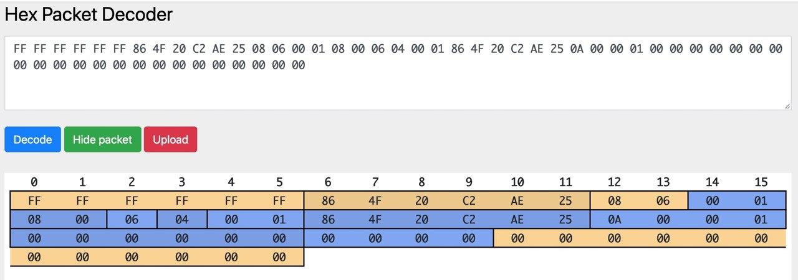
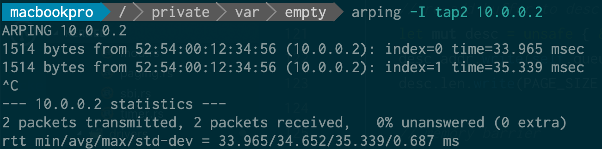
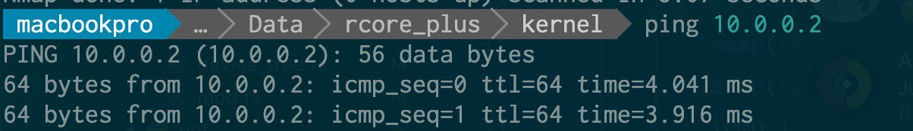
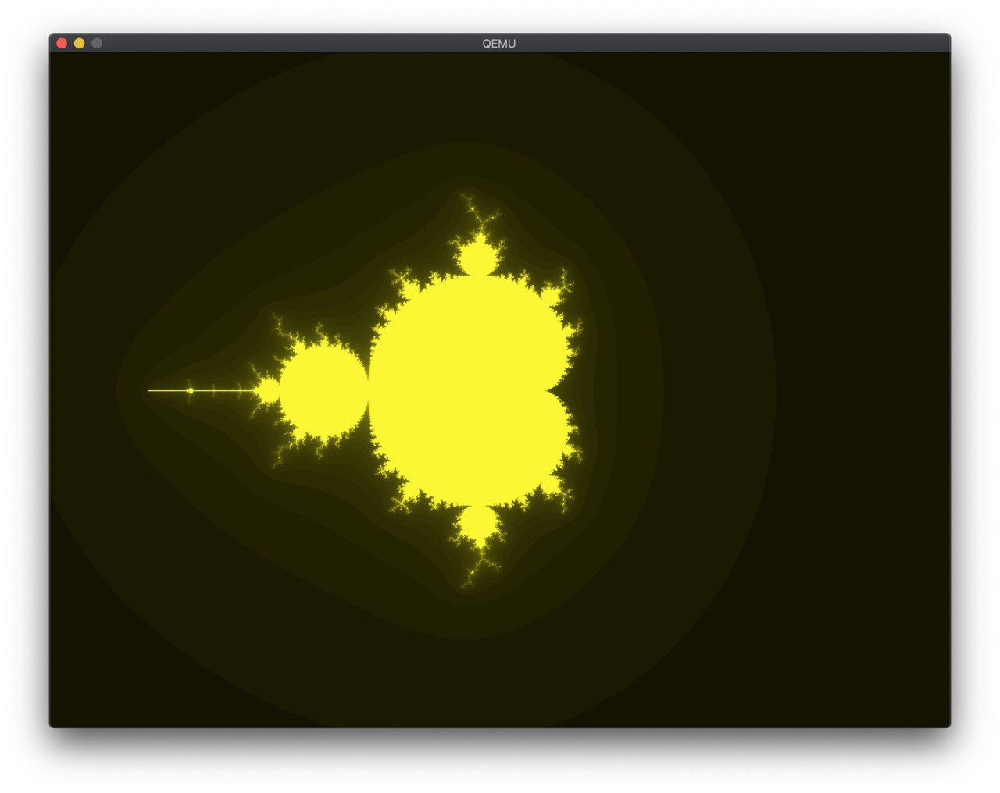
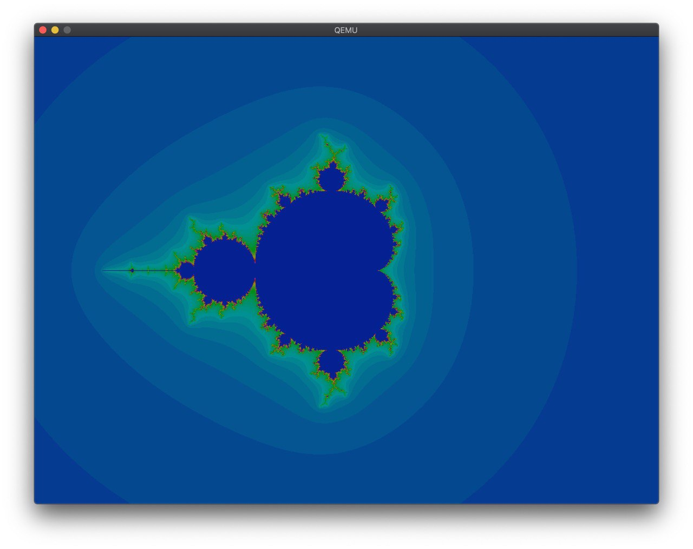
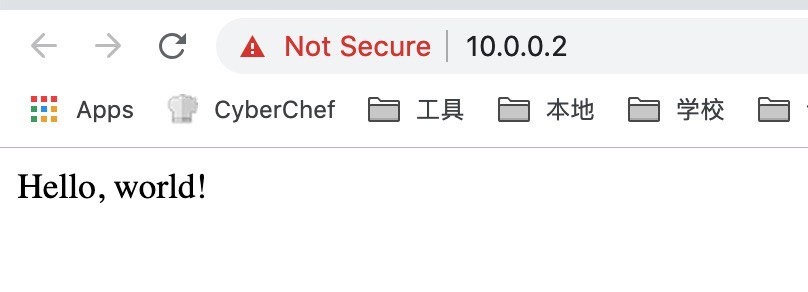

libc++ 的 uniform_int_distribution 性能问题
背景
前段时间，@lwpie 发现一段 C++ 代码在 macOS 下，分别用自带的 Clang 编译和用 Homebrew 的 GCC 编译，性能差距接近一个数量级，下面是运行时间：
- GCC-13 Homebrew: 300
- Apple Clang: 2170
前段时间，@lwpie 发现一段 C++ 代码在 macOS 下，分别用自带的 Clang 编译和用 Homebrew 的 GCC 编译，性能差距接近一个数量级，下面是运行时间：
bash 和 zsh 都实现了 POSIX shell 标准，因此写脚本的时候，比较容易兼容这两种常见的 shell。但现在 fish 也很流行，而 fish 不符合 POSIX shell 标准，很多地方语法多不兼容，能否写一个脚本，可以用 bash，zsh 和 fish 跑？
群友上个月提了一个未知来源问题：
实现一个你自己的 printf(int, ...) 函数，该函数包含可变参数。为简便期间，假设所有参数均为 int 类型。
本文是我自己对 Academic Integrity at MIT: Writing Code 的非官方中文翻译。本文已经得到了官方的邮件授权。
与学术写作类似，当你在做课程项目的时候，如果使用了或者改编了其他人开发的代码，你必须要引用代码的来源。你可以在代码注释中引用代码来源。这些注释不仅保护了他人的劳动成果，也会帮助你理解代码和调试。
Writing code is similar to academic writing in that when you use or
adapt code developed by someone else as part of your project, you must
cite your source. However, instead of quoting or paraphrasing a source,
you include an inline comment in the code. These comments not only
ensure you are giving proper credit, but help with code understanding
and debugging.
当你从外部来源复制了代码。无论你是复制了代码片段，还是一整个模块，你都需要引用来源。
When you copy code from an external source. Whether you are copying a
snippet of code or an entire module, you should credit the source.
当你复制了代码并做了改动，你依然要引用来源。你并不是代码的原作者。
When you copy the code and adapt it, you should still credit the source.
You were not the original developer of the code.
通常来说，代码的网址和下载时间就足够了。如果可以让读者更加清晰地了解到代码来源，可以增加更多的细节。
Generally, the URL and the date of retrieval are sufficient. Add
more details if it will help the reader get a clearer
understanding of the source.
如果你修改了代码，你需要注明：“Adapted from:”（修改自）或者“Based on”（基于）。这样读者就知道你修改了代码。
If you adapted the code, you should indicate “Adapted from:” or
“Based on” so it is understood that you modified the code.
你的老师可能会对你如何引用代码有具体的要求。如果你不能确认什么是可行的，请询问你的老师。
Your instructor may have specific instructions on how you should
or should not cite your sources. If you are not clear on what is
acceptable, ask your instructor.
当你使用开源软件项目的代码的时候，你不仅要注明代码的来源，还需要遵循代码的开源软件许可证。请记住：
When you use code from an open source project, you need both to
attribute the source and follow the terms of any open source license
that applies to the code you are using. Keep in mind:
当你下载源码的时候，它的开源软件许可证通常也在源码中。
When you download the source, the license is typically part of the
download.
同时，代码里也通常会包括它的版权和使用条款。
Also, the source code itself will typically contain the
copyright and terms of use.
当你引入了开源代码，并且它附带了开源软件许可证，你应该把它的版权声明复制到你的代码中，和/或把许可证复制到代码目录中的文件。
When you incorporate open-source-licensed code into a program,
it is good practice to duplicate the copyright in your code,
and/or store the license in a file with the code.
如果在下载的文件里没有找到开源软件许可证，你可以在开源项目的网站上找到全文，如 Apache HTTP Server 网站 或者 Open Source Initiative (OSI) 网站。
If you don’t obtain the license with the download, you should be
able to find it on the site of the open source project, such as
Apache HTTP Server site, or on the Open Source Initiative (OSI)
site.
通常，老师会确定课程的协作规则。如果这个规则没有明确地给出来，或者你不确认什么是可行的，请询问你的老师。
Often, the requirements are described in the collaboration policy for
the class. If policy is not clearly described in the course materials
and you are not sure what is acceptable, ask your instructor.
下面给出一个例子，是课程（Spring 2012 6.005 Elements of Software Construction）的协作规则：
Collaboration policy from Spring 2012 6.005 Elements of Software
Construction: (used with the permission of Professor Rob Miller, Dept of
Electrical Engineering & Computer Science)
我们鼓励同学们互相帮助，但是为了保证每个人都有良好的独立学习体验，我们对你们做了如下的限制：
We encourage you to help each other with work in this class, but there
are limits to what you can do, to ensure that everybody has a good
individual learning experience.
课程里的习题都要单人完成。我们鼓励同学们讨论实现方法，但是你的代码和报告都需要自己完成。
Problem sets in this class are intended to be primarily individual
efforts. You are encouraged to discuss approaches with other students
but your code and your write-up must be your own.
你不能使用其他同学编写的资料，无论是这个学期还是以往学期的同学。你也不可以把你的成果提供给其他同学。
You may not use materials produced as course work by other students,
whether in this term or previous terms, nor may you provide work for
other students to use.
帮助其他同学是应该的。但要保证一个原则，当你在帮助其他同学的时候，你自己的答案或代码不应该可以看到，无论是自己还是其他同学。可以养成一个习惯，帮助他人的时候把笔记本电脑合上。
It’s good to help other students. But as a general rule, during the time
that you are helping another student, your own solution should not be
visible, either to you or to them. Make a habit of closing your laptop
while you’re helping.
在帮助其他同学，阅读同学的代码的时候，你会看到同学的解答。你可以从同学的方法里获得灵感，但是不能复制他们的成果。
During code review, you will see classmates’ solutions to a problem set.
While it is fine to take inspiration from their approach, do not copy
their work.
你可以用外部网站上的资料，比如 StackOverflow，但前提是加上引用，并且作业要求里允许这么做。特别地，如果作业要求里写了“实现 X 功能”，那么你必须自己实现 X 功能，而不能复用外部的代码。
It’s fine to use material from external sources like StackOverflow, but
only with proper attribution, and only if the assignment allows it. In
particular, if the assignment says “implement X,” then you must create
your own X, not reuse one from an external source.
你也可以用课程组提供的代码，不需要引用。老师提供的代码在未经允许的情况下，不能公开分享，我们后面会讨论这个问题。
It’s also fine to use any code provided by this semester’s 6.031 staff
(in class, readings, or problem sets), without need for attribution.
Staff-provided code may not be publicly shared without permission,
however, as discussed later in this document.
例子一 Example 1：
A 和 B 做作业的时候坐在一起。他们简略地讨论实现的不同方法。他们在白板上画流程图。当 A 发现 Java 标准库中一个有用的类，她把这个发现告诉了 B。当 B 发现了 StackOverflow 上的一个回答，他给 A 发送了 URL。可以。
Alyssa and Ben sit next to each other with their laptops while
working on a problem set. They talk in general terms about
different approaches to doing the problem set. They draw
diagrams on the whiteboard. When Alyssa discovers a useful class
in the Java library, she mentions it to Ben. When Ben finds a
StackOverflow answer that helps, he sends the URL to Alyssa. OK.
在他们编写代码的时候，他们把代码大声念出来，好让双方都可以编写正确的代码。错误！
As they type lines of code, they speak the code aloud to the
other person, to make sure both people have the right code.
INAPPROPRIATE.
在作业最困难的部分，A 和 B 互相看电脑屏幕，并对比代码，确认他们代码实现都是正确的。错误！
In a tricky part of the problem set, Alyssa and Ben look at each
other’s screens and compare them so that they can get their code
right. INAPPROPRIATE.
例子二 Example 2：
J 已经完成了作业，但是他的朋友 B 正在努力解决一个 bug。J 坐在 B 旁边，看他的代码，帮他调试出了问题。可以。
Jerry already finished the problem set, but his friend Ben is
now struggling with a nasty bug. Jerry sits next to Ben, looks
at his code, and helps him debug. OK.
J 打开了自己的笔记本，找到自己的答案，然后指着自己的代码给 B 纠正错误。错误！
Jerry opens his own laptop, finds his solution to the problem
set, and refers to it while he’s helping Ben correct his code.
INAPPROPRIATE.
例子三 Example 3：
L 这周有很多作业，但是因为时间和身体原因来不及做。他已经错过截止时间两天了，但基本没有什么进度。B 觉得 L 可怜，想要帮助 L。在 L 写作业的时候，B 告诉 L 他是怎么做作业的。B 已经提交了自己的答案，并且在帮助 L 的时候，不打开自己的笔记本电脑。可以。
Louis had three problem sets and two quizzes this week, was away
from campus for several days for a track meet, and then got
sick. He’s already taken two slack days on the deadline and has
made almost no progress on the problem set. Ben feels sorry for
Louis and wants to help, so he sits down with Louis and talks
with him about how to do the problem set while Louis is working
on it. Ben already handed in his own solution, but he doesn’t
open his own laptop to look at it while he’s helping Louis. OK.
B 打开了自己的笔记本电脑，并且在帮助 L 的时候阅读自己的代码。错误！
Ben opens his laptop and reads his own code while he’s helping
Louis. INAPPROPRIATE.
B 花了几个小时帮助 L，但是 L 还是没有完成。但是 B 需要去做自己的事情了。在 L 承诺只有在必要的时候才会看 B 的代码之后，B 把自己的代码上传到 Dropbox 并且分享给了 L。错误！
Ben has by now spent a couple hours with Louis, and Louis still
needs help, but Ben really needs to get back to his own work. He
puts his code in a Dropbox and shares it with Louis, after Louis
promises only to look at it when he really has to.
INAPPROPRIATE.
例子四 Example 4：
John and Ellen both worked on their problem sets separately.
They exchange their test cases with each other to check their
work. INAPPROPRIATE. Test cases are part of the material for the
problem set, and part of the learning experience of the course.
You are copying if you use somebody else’s test cases, even if
temporarily.
注意，在上面的例子中，双方都负有学术不端的责任。抄袭作业，或者把自己的作业提供给他人，是一个很严重的事情，可能导致分数扣减，课程不及格甚至处分。抄袭作业，或者帮助他人抄袭，可能会给你的成绩单上添加一个不能消除的 F。
Note that in the examples marked inappropriate above, both people are
held responsible for the violation in academic honesty. Copying work, or
knowingly making work available for copying, in contravention of this
policy is a serious offense that may incur reduced grades, failing the
course, and disciplinary action. Copying, or helping somebody copy, may
result in an F on your transcript that you will not be able to drop.
上述的要求对课程所有的单人作业都使用。
This policy applies to all coursework that is handed in by an
individual: problem sets, reading exercises, nanoquiz makeups, etc.
你应该和你的队友合作完成组队作业，并且每个人都应该有接近的任务量。
You should collaborate with your partners on all aspects of group
project work and in-class collaborative exercises, and each of you is
expected to contribute a roughly equal share to design and
implementation.
你可以复用自己在学期内早些时候编写的代码等（包括之前自己和其他队友完成的）。你也可以用课程提供的任何代码。
You may reuse designs, ideas and code from your own work earlier in the
semester (even if it was done with a different partner). You may also
use any code provided by this semester’s 6.031 staff.
你可以使用外部代码，只要：
特别地，如果作业要求你“实现 X 功能”，你就必须自己实现 X 功能，不能复用他人的。
你们组不能复用其他组的代码和思路，无论是其他组是当前学期还是以往学期的同学。
You may also use material from external sources, so long as: (1) the
material is available to all students in the class; (2) you give proper
attribution; and (3) the assignment itself allows it. In particular, if
the assignment says “implement X,” then you must create your own X, not
reuse someone else’s. Finally, your group may not reuse designs, ideas,
or code created by another group, in this semester or previous
semesters.
你不能抄袭其他同学的代码。你的同学不是一个合法的代码来源。
You should never copy code from other students. Your peers are
not considered an authorized source.
你不能简单地复用网上的代码。就像学术写作，你可以采用别人的思路，但是你也要把自己的理解加进去。
You should not simply re-use code as the solution to an
assignment. Like academic writing, your code can incorporate the
ideas of others but should reflect your original approach to the
problem.
例子一 Example 1：
在 Apache 项目的源码的 PluginProxyUtil 类中，开发者引用了论坛的 URL，作者和时间：
In describing the class PluginProxyUtil in the Apache Project source
code, the developer cites the source as a post in a forum and includes
the URL, author and date:
/**
* A utility class that gives applets the ability to detect proxy host settings.
* This was adapted from a post from Chris Forster on 20030227 to a Sun Java
* forum here:
* http://forum.java.sun.com/thread.jspa?threadID=364342&tstart=120
[…]
*/
（来源：Apache Project 源代码 http://svn.apache.org 于 2019 年 7 月获取）
(Source: Apache Project source code http://svn.apache.org retrieved in
July 2019.)
例子二 Example 2：
在 Google Chrome stack_trace_win 的 OutputTraceToStream 函数中，开发者引用了 Microsoft Developer Network 并且附带了 URL：
In the function OutputTraceToStream in the Google Chrome stack_trace_win
source code, the developer cites the source code as the Microsoft
Developer Network and includes a URL:
（来源：https://github.com/adobe/chromium/blob/master/base/debug/stack_trace_win.cc 于 2019 年 7 月获取）
(Source:
https://github.com/adobe/chromium/blob/master/base/debug/stack_trace_win.cc
retrieved in July 2019.)
在 Google Chrome stack_trace_win 代码的开头，可以看到版权声明和开源许可证的引用：
At the top of the Google Chrome stack_trace_win source file, note the
copyright and reference to the open source license:
// Copyright (c) 2011 The Chromium Authors. All rights reserved.
// Use of this source code is governed by a BSD-style license that can be
// found in the LICENSE file.
如果你把这个代码加入到你的程序中，你需要遵守 Chromium 作者的开源许可证协议中的条款。虽然这个开源许可证只要求你在重分发的时候复制一份版权声明和许可证，一个好习惯是无论是否要求，你都要复制它的版权声明到代码中，和/或把它的许可证放到代码目录的文件中。这样的话，如果你在将来想要重分发你的代码，就很容易检查知识产权相关的问题。
If you incorporate this code into a program, you should follow the terms
outlined in The Chromium Authors' open source license file, which is
shown below. While this license only requires that you duplicate the
copyright and license if you are redistributing the code, it is good
practice to always duplicate the copyright in your code, and/or store
the license in a file with the code. This way, if you want to
redistribute the code later, intellectual property reviewing becomes
much easier.
// Copyright (c) 2014 The Chromium Authors. All rights reserved.
//
// Redistribution and use in source and binary forms, with or without
// modification, are permitted provided that the following conditions are
// met:
//
//* Redistributions of source code must retain the above copyright
// notice, this list of conditions and the following disclaimer.
//* Redistributions in binary form must reproduce the above
// copyright notice, this list of conditions and the following disclaimer
// in the documentation and/or other materials provided with the
// distribution.
//* Neither the name of Google Inc. nor the names of its
// contributors may be used to endorse or promote products derived from
// this software without specific prior written permission.
//
// THIS SOFTWARE IS PROVIDED BY THE COPYRIGHT HOLDERS AND CONTRIBUTORS
// "AS IS" AND ANY EXPRESS OR IMPLIED WARRANTIES, INCLUDING, BUT NOT
// LIMITED TO, THE IMPLIED WARRANTIES OF MERCHANTABILITY AND FITNESS FOR
// A PARTICULAR PURPOSE ARE DISCLAIMED. IN NO EVENT SHALL THE COPYRIGHT
// OWNER OR CONTRIBUTORS BE LIABLE FOR ANY DIRECT, INDIRECT, INCIDENTAL,
// SPECIAL, EXEMPLARY, OR CONSEQUENTIAL DAMAGES (INCLUDING, BUT NOT
// LIMITED TO, PROCUREMENT OF SUBSTITUTE GOODS OR SERVICES; LOSS OF USE,
// DATA, OR PROFITS; OR BUSINESS INTERRUPTION) HOWEVER CAUSED AND ON ANY
// THEORY OF LIABILITY, WHETHER IN CONTRACT, STRICT LIABILITY, OR TORT
// (INCLUDING NEGLIGENCE OR OTHERWISE) ARISING IN ANY WAY OUT OF THE USE
// OF THIS SOFTWARE, EVEN IF ADVISED OF THE POSSIBILITY OF SUCH DAMAGE.
//
（来源：The Chromium Authors license file https://src.chromium.org/viewvc/chrome/trunk/src/LICENSE 于 2019 年 7 月获取）
(Source: The Chromium Authors license file
https://src.chromium.org/viewvc/chrome/trunk/src/LICENSE retrieved in
July 2019.)
有同学遇到这样的一个问题，代码中链接了一个第三方的动态库，在链接的时候出现了不一致的问题，比如有一个函数签名如下：
使用 GCC 11.1.0 编译上面的代码，可以发现它需要的符号是 _Z6foobarNSt7__cxx1112basic_stringIcSt11char_traitsIcESaIcEEE，但是第三方库里面却是 _Z6foobarSs，因此找不到对应的符号，链接失败。
经过一番研究，发现 Ss 在 Itanium ABI 中表示的是缩写：
In addition, the following catalog of abbreviations of the form "Sx" are used:
<substitution> ::= St # ::std::
<substitution> ::= Sa # ::std::allocator
<substitution> ::= Sb # ::std::basic_string
<substitution> ::= Ss # ::std::basic_string < char,
::std::char_traits<char>,
::std::allocator<char> >
<substitution> ::= Si # ::std::basic_istream<char, std::char_traits<char> >
<substitution> ::= So # ::std::basic_ostream<char, std::char_traits<char> >
<substitution> ::= Sd # ::std::basic_iostream<char, std::char_traits<char> >
这看起来很正常，_Z6foobarSs 表示的是 foobar(std::basic_string<char, std::char_traits<char>, std::allocator<char> >)，但是 GCC 11.1.0 编译出来的上面的代码却没有用这个符号，而是 foobar(std::__cxx11::basic_string<char, std::char_traits<char>, std::allocator<char> >)。差别就在于 __cxx11 中。
经过一番搜索，找到了 GCC 关于这个问题的文档和网上的文章，找到了原因：从 GCC5 开始，为了兼容 C++11 标准的改变，做了这个变动。如果要恢复原来的行为，需要添加一个定义：
$ g++ -D_GLIBCXX_USE_CXX11_ABI=0 -c test.cpp -o test.o && nm test.o | grep foobar
0000000000000000 T _Z6foobarSs
$ g++ -c test.cpp -o test.o && nm test.o | grep foobar
0000000000000000 T _Z6foobarNSt7__cxx1112basic_stringIcSt11char_traitsIcESaIcEEE
# install g++-4.9 in ubuntu 16.04
$ g++-4.9 -c test.cpp -o test.o && nm test.o | grep foobar
0000000000000000 T _Z6foobarSs
这样就可以正常链接到第三方的动态库了。
不久前，rust 添加了 Tier2 的 aarch64-apple-darwin 的支持，试了一下，确实可以运行，不过当我编译的时候，出现：
error: failed to run custom build command for `xxxx v1.0 (/path/to/xxxx)`
Caused by:
process didn't exit successfully: `/path/to/xxx/target/debug/build/xxx-xxxx/build-script-build` (signal: 9, SIGKILL: kill)
看了一下 Console.app 里面的 crash 日志，发现是 codesigning 问题。解决方法是，用 codesign 命令来签名：
# for build.rs
codesign -s - target/debug/build/*/build-script-build
# for dylib of some crates
codesign -s - target/debug/deps/*.dylib
# for final executable
codesign -s - target/debug/xxx
多次编译并签名后，就可以正常运行最后的二进制了：
然后就可以了。等待上游添加 code signing 支持吧。
2020-12-07 更新：找了找 cargo 的 issues，找到了同样的问题，看来并不是 code signing 支持的问题，而是在 Intel 的 Alacritty 下面，运行 Apple 的 rustc 工具链的时候，才会出现的 BUG。我也自己试了一下，在 Apple 的 Terminal 下跑编译就没有问题。
远程到 arm64 的机器上进行开发，发现没有 rust-analyzer 的支持。研究了一下，发现在 rustup 里面可以找到，不过要配置一下：
这个时候，应该可以找到 ~/.rustup/toolchains/nightly-aarch64-unknown-linux-gnu/bin/rust-analyzer 文件，接下来，配置 VSCode 插件即可：
{
"rust-analyzer.serverPath": "~/.rustup/toolchains/nightly-aarch64-unknown-linux-gnu/bin/rust-analyzer"
}
路径在 ~/.vscode-server/data/Machine/settings.json。
参考：https://github.com/rust-analyzer/rust-analyzer/issues/5256
编译原理课程在做 Decaf 的 PA，之前做了一些比较简单的尝试，包括在线 Decaf、在线 TAC VM 等等，都是套一个前端，然后整个编译到 wasm 跑前端就可以了。如果要做 LSP 的话，工作量会稍微大一些，不过也更加实用。
然后有一天，助教 @equation314 写了 decaf-vscode 一个 VSCode 对 Decaf 的语法高亮插件，我就 Fork 了一份到 jiegec/decaf-vscode，然后添加了 LSP 的支持，让它有了一些更高级的功能。
LSP 服务端一般是一个命令行程序，通过 JSONRPC 进行消息通讯，然后就上午找有没有现成的框架。比较重要的是 lsp-types 和 tower-lsp ，前者封装了 LSP 协议的各个结构体，后者提供了服务端的大概实现。不过由于后者做的不大全，所以我自己 fork 了一份添加了一些。
实际实现的时候，需要实现几个函数，分别相应客户端的请求，比如在 initialize 的时候告诉客户端我都实现了哪些东西，然后相应地提供各种信息，如 symbol，hover，folding，definition 等等。为了实现简单，我要求客户端每次修改的时候都把完整的文件传过来，虽然不是很高效，但是很简单，目前也没有啥很长的 Decaf 程序嘛。
每次拿到 Decaf 程序之后，就按照 decaf-rs 的方法，Lex 然后 Parse，然后遍历 AST，分别把需要的各个信息都存下来，当客户端在请求的时候，直接返回即可。然后就会在 VSCode 中出现，比如实现了 document symbol，在左边的 Outline 中就会出现相应的结构；实现了 hover，当移动到一些地方的时候，客户端发出请求，服务端就把相应的 hover 信息返回给客户端。整个协议并不复杂，后面实际实现其实才是比较复杂的地方。
实现的功能中，symbols hovers ranges definition 都是在得到 AST 后一次遍历都计算好，然后返回，同时在遇到错误的时候，也通过 diagnostic 的形式把检查出来的错误汇报给用户。由于 VSCode 的良好支持，基本不需要写 TypeScript 代码。
至于代码补全，现在做的比较粗糙，仅仅补全了一些内置函数：Print ReadInteger 和 ReadLine。还在考虑支持函数调用的补全，但是在补全的时候会出现语法错误，意味着需要保证在补全的时候我还能拿到之前正确的类型信息，需要一些工作量，现在还没有去做。
我自己测试的方法就是两个窗口，一个是 decaf-lsp ，首先克隆下来，然后 cargo install --path . --force 来安装到全局；另一个就是我 Fork 的 decaf-vscode ，克隆下来，然后按 F5 进入 VSCode 的调试模式，它会打开一个新窗口，里面启用了 Decaf for VSCode 插件。这个时候看 Decaf 代码就可以看到上面提到的那些东西了。
感觉 LSP 是一个比较好实现的 Protocol，但 Protocol 承载的 Data 才是比较困难的东西。要实现一个完整的 completion 还需要很多东西，现在只能说是个 naive implementation 吧。
刚写完就发现 Neovim 发布了 官方的 LSP client 。
在编译原理课上，PA 框架采用的是 MashPlant/lalr1 ，是一个比较好用的 Lexer + Parser 的工具，它的大概语法见 一个完整的例子 。然后之前看到了 GLL Parser，想着可不可以照着类似的语法也写一个 GLL 的 Parser Generator，也是用 Rust Procedure Macro 的方法，就开始了研究。
首先是阅读 GLL 的论文，它并不长，大概的意思就是，LL(1) 文法需要考虑 PS 冲突的情况，而 GLL 的解决方法就是“都试一下”，然后为了效率，用了 GSS 表示解析过程和 SPPF 表示解析结果。然后就开始照着论文手写了不同版本的实现，见 jiegec/gll-test 。
第一种就是按照论文里第一段实现直接抄过来，每个可能性作为一个 Continuation 存下来，它有自己的栈和执行位置（Label）。这样 Work 以后呢，我又想到了 async/await，用类似的方法又写了一遍，相对要简洁一些，也是很平常的递归下降的写法，而不是 Loop + Label 的形式。但这些都不能做到合并栈的目的，所以遇到十分有歧义的文法的时候会很糟糕。
然后开始按照论文中的 GSS 进行编写，基本还是按照论文进行翻译，然后一步一步做，做好以后把 GSS 画出来，和论文的图可以对的上；然后照着 GLL parse-tree generation 的论文把 SPPF 实现了，这时候就可以从 recongizer 变成一个 parser 了。
得到一份可行的代码以后，就要扩展到通用的情况上。学习了一下 MashPlant/lalr1 的实现，实现了一个 proc macro，它读取了用户的程序，从一个模板文件开始，往里面插入一些生成的代码，丢给编译器去编译。这时候就涉及到编译期和运行时的不同了，我把运行时一些通用的结构放到了 gll-pg-core 中，把编译期的代码放到了 gll-pg-macros 。
代码生成的时候，基本按照之前自己写的样子抄，只不过这个时候要按照用户编写的产生式进行生成了，各种名字都要规范化，变得可以复用，然后尽量减少命名空间的污染等等这些常见的写宏需要注意的操作。
不过，考虑到现在还没有实现 Lexer，所以先用了 Logos 库作为 Lexer。但我其实不大喜欢它，因为它太简单，也没有行号的信息，不过暂且先这样吧，以后可能会自己实现。
然后 0.1.0 版本就诞生了，它的样例长这样：
//! This example is taken from MashPlant/lalr1
use gll_pg_core::LogosToken;
use gll_pg_macros::gll;
use logos::Logos;
#[derive(Logos, Debug, Eq, PartialEq, Clone)]
pub enum Token {
#[end]
End,
#[error]
Error,
#[token = " "]
_Eps,
#[token = "+"]
Add,
#[token = "-"]
Sub,
#[token = "*"]
Mul,
#[token = "/"]
Div,
#[token = "%"]
Mod,
#[token = "("]
LPar,
#[token = ")"]
RPar,
#[regex = "[0-9]+"]
IntLit,
}
#[gll(Expr, Token)]
impl Parser {
#[rule(Expr -> Expr Add Expr)]
fn expr_add(l: i32, _op: LogosToken<Token>, r: i32) -> i32 {
l + r
}
#[rule(Expr -> Expr Sub Expr)]
fn expr_sub(l: i32, _op: LogosToken<Token>, r: i32) -> i32 {
l - r
}
#[rule(Expr -> Expr Mul Expr)]
fn expr_mul(l: i32, _op: LogosToken<Token>, r: i32) -> i32 {
l * r
}
#[rule(Expr -> Expr Div Expr)]
fn expr_div(l: i32, _op: LogosToken<Token>, r: i32) -> i32 {
l / r
}
#[rule(Expr -> Expr Mod Expr)]
fn expr_mod(l: i32, _op: LogosToken<Token>, r: i32) -> i32 {
l % r
}
#[rule(Expr -> Sub Expr)]
fn expr_neg(_op: LogosToken<Token>, r: i32) -> i32 {
-r
}
#[rule(Expr -> LPar Expr RPar)]
fn expr_paren(_l: LogosToken<Token>, i: i32, _r: LogosToken<Token>) -> i32 {
i
}
#[rule(Expr -> IntLit)]
fn expr_int(i: LogosToken<Token>) -> i32 {
i.slice.parse().unwrap()
}
}
#[test]
fn gll() {
let mut lexer = Token::lexer("1 + 2 * 3");
let res = Parser::parse(&mut lexer);
// two ways to parse
assert_eq!(res, [7, 9]);
}
可以看到，它解析的结果是一个数组，对应所有可能出现的情况。这样比较简单，但是要求中间各种类型都是 Clone，因为同一个结点可能会被用多次。它的计算方法就是在最终的 SPPF 上递归找到所有可能性，然后调用用户代码，最后放到一个 Vec 中。
但是，上面的做法有一个很大的问题，就是，虽然 SPPF 的空间复杂度是有限的，但所有可能的解析树可以有很多，如果把每一个情况都完整的存在一个 Vec 中，空间要求是很高的，中间也有很多重复计算的情况。所以需要做记忆化，然后每次给出一个。因为依赖自己内部的状态，所以不能是 Iterator 只能是 StreamingIterator。
记忆化也花了我一番功夫，现在用了一个比较土的办法，在每个结点上记录了当前遇到过的所有可能，这个是逐渐构造的，意味着如果只需要第一种解析树，不需要额外的空间。然后逐渐扩张，如果有可以重用的结构就重用，把涉及的所有的结构都放在一个 Vec 中，用完之后一起 drop 掉。
当然了，这个时候，各种东西都变成了引用：
//! This example is taken from MashPlant/lalr1
use gll_pg_core::*;
use gll_pg_macros::gll;
use logos::Logos;
#[derive(Logos, Debug, Eq, PartialEq, Clone)]
enum Token {
#[end]
End,
#[error]
Error,
#[token = " "]
_Eps,
#[token = "+"]
Add,
#[token = "-"]
Sub,
#[token = "*"]
Mul,
#[token = "/"]
Div,
#[token = "%"]
Mod,
#[token = "("]
LPar,
#[token = ")"]
RPar,
#[regex = "[0-9]+"]
IntLit,
}
#[derive(Default)]
struct Parser {
literals: Vec<i32>,
}
#[gll(Expr, Token)]
impl Parser {
// you can omit self
#[rule(Expr -> Expr Add Expr)]
fn expr_add(l: &i32, _op: &LogosToken<Token>, r: &i32) -> i32 {
*l + *r
}
// you can use &self
#[rule(Expr -> Expr Sub Expr)]
fn expr_sub(&self, l: &i32, _op: &LogosToken<Token>, r: &i32) -> i32 {
*l - *r
}
// you can use &mut self as well
// but all of these have &mut self in fact
#[rule(Expr -> Expr Mul Expr)]
fn expr_mul(&mut self, l: &i32, _op: &LogosToken<Token>, r: &i32) -> i32 {
*l * *r
}
#[rule(Expr -> Expr Div Expr)]
fn expr_div(l: &i32, _op: &LogosToken<Token>, r: &i32) -> i32 {
*l / *r
}
#[rule(Expr -> Expr Mod Expr)]
fn expr_mod(l: &i32, _op: &LogosToken<Token>, r: &i32) -> i32 {
*l % *r
}
#[rule(Expr -> Sub Expr)]
fn expr_neg(_op: &LogosToken<Token>, r: &i32) -> i32 {
-*r
}
#[rule(Expr -> LPar Expr RPar)]
fn expr_paren(_l: &LogosToken<Token>, i: &i32, _r: &LogosToken<Token>) -> i32 {
*i
}
// so you can make your IDE happy with &mut self here
#[rule(Expr -> IntLit)]
fn expr_int(&mut self, i: &LogosToken<Token>) -> i32 {
let lit = i.slice.parse().unwrap();
self.literals.push(lit);
lit
}
}
#[test]
fn ambiguous() {
let mut lexer = Token::lexer("1 + 2 + 3");
let mut parser = Parser { literals: vec![] };
let res = parser.parse(&mut lexer).unwrap();
// two ways to parse
let res: Vec<_> = res.cloned().collect();
assert_eq!(res, vec![6, 6]);
}
这时候就是 0.3.0 版本，基本达到了我一开始想要的程度。
在之前写编译原理 PA1 的时候，遇到的一个问题就是，如果自己的代码有错，因为宏展开以后丢失了位置信息，所以报错都会在错误的位置。一番查找以后，找到了解决方案：原样记录下原来的代码（syn::Block），然后通过 quote 宏直接拼接到最终的 TokenStream 中，这样在结果里，虽然代码还是那些代码，但部分的 Token 就有了正确的位置，这样就很方便用户代码的修改了。不过还是不方便找模板部分的代码错误，毕竟那部分确实在原来的代码中没有出现过。
对于模板中的代码错误，我最终的解决方案是 cargo-expand ，把我的测试代码和展开后的代码拼接起来，然后在茫茫的无关报错下去找我的错误的地方。虽然不是很好用，但毕竟还是 work 的。另外，宏还需要对用户代码的一些类型进行检查，比如上面的 Expr 对应 i32，这个就需要在各处都保持一致，但这个就需要自己进行检查了。使用了一下 proc_macro_diagnostic 的 API，还不是很好用，等它 stable 吧。
终于自己手写了一个 Procedure Macro，感觉现有的工具已经比较成熟了，有 syn quote 以后很多操作都很方便。但代码还有很多地方可以优化，慢慢搞吧。
之前做过一个在前端解析上传的 CSV 的功能，但是只能支持部分的 encoding，遇到 gbk 就傻眼了。一番研究以后，找到了比较科学的方案：
import * as Chardet from 'chardet';
import * as Iconv from 'iconv-lite';
const reader = new FileReader();
reader.onload = (e) => {
const data = e.target.result;
const view = Buffer.from(data);
// detect encoding and convert
const encoding = Chardet.detect(view);
const result = Iconv.decode(view, encoding);
const csvData = Papa.parse(result).data;
// do anything with it
};
reader.readAsArrayBuffer(blob_here);
依赖了两个库：chardet 和 iconv-lite ，测试了一下，解析 UTF-8 GBK UTF-16BE 都没问题。
P.S. 在生成 csv 的时候，也会出现 Excel 打开后乱码的问题，一开始我以为需要转 UTF-16 然后再添加 BOM Mark，后来发现只要在最前面加上 0xEF 0xBB 0xFB（UTF-8 编码下的 BOM Mark）即可。
最近发现了两个很神奇的 Undefined Behavior，出现在 Prefix Len 和 Netmask 的转换的问题下。一个简单思路可能是：
#define PREFIX_BIN2DEC(bin) (32 - __builtin_ctz((bin)))
#define PREFIX_DEC2BIN(hex) (((~0) >> (32 - (hex))) << (32 - (hex))
乍一看，似乎没有什么问题。但是，在一些平台下，可能会出现这样的结果：
而且只能在一些平台上不确定地复现，最后发现其实是 Undefined Behavior，在 C 的标准中：
In any case, the behavior is undefined if rhs is negative or is greater or equal the number of bits in the promoted lhs.
意味着， 0xFFFFFFFF >> 32 是一个 UB，所以出现了上面的问题。
另外，__builtin_ctz 有这样的说明：
Returns the number of trailing 0-bits in x, starting at the least significant bit position. If x is 0, the result is undefined.
意味着，__builtin_ctz(0) 也是一个 UB，所以得到了错误的结果。
解决方案也很简单，下面提供一个参考的解决方法：
#define PREFIX_BIN2DEC(bin) ((bin) ? (32 - __builtin_ctz((bin))) : 0)
#define PREFIX_DEC2BIN(hex) (((uint64_t)0xFFFFFFFF << (32 - (hex))) & 0xFFFFFFFF)
Quagga 的实现：
/* Convert masklen into IP address's netmask (network byte order). */
void
masklen2ip (const int masklen, struct in_addr *netmask)
{
assert (masklen >= 0 && masklen <= IPV4_MAX_BITLEN);
/* left shift is only defined for less than the size of the type.
* we unconditionally use long long in case the target platform
* has defined behaviour for << 32 (or has a 64-bit left shift) */
if (sizeof(unsigned long long) > 4)
netmask->s_addr = htonl(0xffffffffULL << (32 - masklen));
else
netmask->s_addr = htonl(masklen ? 0xffffffffU << (32 - masklen) : 0);
}
/* Convert IP address's netmask into integer. We assume netmask is
sequential one. Argument netmask should be network byte order. */
u_char
ip_masklen (struct in_addr netmask)
{
uint32_t tmp = ~ntohl(netmask.s_addr);
if (tmp)
/* clz: count leading zeroes. sadly, the behaviour of this builtin
* is undefined for a 0 argument, even though most CPUs give 32 */
return __builtin_clz(tmp);
else
return 32;
}
BIRD 的解决方法：
/**
* u32_mkmask - create a bit mask
* @n: number of bits
*
* u32_mkmask() returns an unsigned 32-bit integer which binary
* representation consists of @n ones followed by zeroes.
*/
u32
u32_mkmask(uint n)
{
return n ? ~((1 << (32 - n)) - 1) : 0;
}
/**
* u32_masklen - calculate length of a bit mask
* @x: bit mask
*
* This function checks whether the given integer @x represents
* a valid bit mask (binary representation contains first ones, then
* zeroes) and returns the number of ones or 255 if the mask is invalid.
*/
uint
u32_masklen(u32 x)
{
int l = 0;
u32 n = ~x;
if (n & (n+1)) return 255;
if (x & 0x0000ffff) { x &= 0x0000ffff; l += 16; }
if (x & 0x00ff00ff) { x &= 0x00ff00ff; l += 8; }
if (x & 0x0f0f0f0f) { x &= 0x0f0f0f0f; l += 4; }
if (x & 0x33333333) { x &= 0x33333333; l += 2; }
if (x & 0x55555555) l++;
if (x & 0xaaaaaaaa) l++;
return l;
}
最近拿到了高云 FPGA GW2A-18 开发版，想在这上面做一些小工程。不过首先要配置好环境什么的。官方提供了 Linux 和 Windows 的两套工具，自然是拥抱 Linux 咯，但是由于官方适配的是 Redhat 系的操作系统，所以用 Debian 系的时候出现了若干问题，后面会谈到怎么解决的。
首先是官网下载了它的软件，大概有 IDE，综合器，布线器和 Programmer 四个工具，然后开始跑，发现缺少了 libcrypt.so.1.0.0。上网搜了一下解决方案，需要重新编译 openssl-1.0.0，于是下载并且编译了 openssl-1.0.0t 并且把 .so 的路径调好了，这时候就可以打开 IDE 了。然后发现需要 License，这个很简单，去官网申请一下，一天邮件就下来了。
接下来配置 License，IDE 很容易，直接选择邮件里发下来的 node-locked License 即可。不过 Synplify Pro 的 Linux 版本不支持直接单文件 node-locked 的 License，只允许跑 SCL … 不过高云也提供了 SCL 的下载，和 IDE 的 License Server 放在一起，安装完以后，在得到的 License 里加上两行：
然后把 $LM_LICENSE_FILE 指向这个文件路径，就可以了。这一部分感谢 @Jackey-Huo。
随手写了一个简化版的点亮数字人生（没有数码管），得到了 bistream，准备往板子里刷，然后问题出现了：
ImportError: /path/to/Gowin_YunYuan_V1.9.0Beta_linux/Programmer/bin/librt.so.1: symbol __vdso_clock_gettime version GLIBC_PRIVATE not defined in file libc.so.6 with link time reference
目测是 glibc 版本问题 … 这就很难处理了。另外又从官网下载了独立的 Programmer，仍然不行，检测不到设备。
最后想了想，找到了终极办法，在 Docker 里运行 CentOS 的 Privileged Container，再跑 programmer：
CentOS 镜像出乎意料地小。进去以后，找到 Programmer 路径，然后 scan：
# ./programmer_cli --scan
Scanning!
Current download-cable channel:0
Device Info:
Family: GW2A
Name: GW2A-18
ID: 0xREDACTED
1 device(s) found!
Cost 0.54 second(s)
接着烧到 SRAM 中：
# ./programmer_cli -d GW2A-18 --fsFile /path/to/bitstream.fs --run 2
"SRAM Program" starting on device-1...
Programming...: [#########################] 100%
User Code: 0xREDACTED
Status Code: 0xREDACTED
Cost 4.54 second(s)
烧录成功，功能测试也没有问题。可以继续进行下一步工作了。
阿 西 吧 nginx 终于能在 rCore 上跑了 orrrrrrrz
通过这半个多月来的大量开发，我和王润基 @wangrunji0408 学长算是终于完成了第一个 milestone：跑起来一个 nginx。遇到了很多困难，大概有这些：
然后代码也是一边在写一边在重构吧，很多地方现在都写得很粗暴，FIXME 和 TODO 留了很多，很多地方也写得不够优雅。以后再慢慢重构 + 优化吧。
截图留念：

再往前的话，还有很多小的问题，例如网卡的中断启用了但没有改 mask，所以啥也没收到，靠 QEMU Tracing 找到问题。还有一个很有意思的现象，就是如果 elf 的 program header 没有 phdr 这个项的时候，我们发现，可以通过第一个 load（如果加载了完整的 elf 头的话），我们可以从这里推断出 phdr 的地址（load 的虚拟地址加偏移），然后丢到 auxv 里去让 musl 配置 tls。总之这些都解决了。也不用去考虑兼容 litc 了，已经全部向 linux 靠拢了，稳。
注：最简 nginx 编译参数：
./configure --with-cc=/usr/bin/musl-gcc --with-cc-opt=-static --with-ld-opt=-satic --without-pcre --without-http_rewrite_module --without-http_gzip_module --with-poll_module
这样编译出来是一个静态文件，并且在 strip 之后只有不到 1M 的大小。
最简 nginx 配置：
daemon off;
master_process off;
events {
use poll;
}
http {
server {
listen 80;
server_name _;
root /;
}
}
这样就免去了一些麻烦（多线程、多进程交互还是有很多问题），但确实可以跑起来了。
另外，还需要写一份 /etc/passwd 和 /etc/group 用于 nobody 和 nogroup。不需要其他额外的东西了。
有了网卡驱动，接下来要做的就做网络的 syscall 了。为了测试，首先在 busybox 里找可以用来测试的 applet，由于没有实现 poll，所以 nc telnet 啥的都用不了。最后选择到了 ping 和 pscan 上。
ping 大家都很了解，pscan 就是一个扫端口的，对一个 ip 连续的若干个端口发起 tcp 请求。这就要求我提供 raw socket 和 tcp socket 状态的支持。由于网络栈本身是异步的，但 read connect 这些函数在不调 setsockopt 的前提下又是同步的，然而现在又没有 signal 可以用，要是 block 了就再也出不来了。于是就采用了 Condvar 的办法，拿一个全局的条件变量，当 poll 不到内容的时候，先把线程拿掉，等到网络栈更新了，再恢复。这样至少不会把 cpu 也 block 住。
然后就是把 socket 部分改了又改吧，数据结构的设计改了几次，为了解决 ownership 问题上锁啊也有点多，但是也更细了，虽然实际上可能没有必要，因为上面还有大的锁。不过性能还不是现在考虑的重点，关键还要先把 send recv accept bind listen 啥的写得差不多了，然后还有把 poll/select 实现了，这个很关键。
中间遇到的最大的坑就是，接收 pci interrupt 的时候总是啥也没有，然后靠万能的 qemu trace 发现，原来是 mask 掉了，所以啥也收不了，然后最后的解决方案就是用 MSI Interrupt #55 搞定了这个问题。至于为啥是 55 呢，因为 23 + 32 = 55 啊（误
总之是修好了。终于可以继续写其它的 syscall 了。还没想好 poll 要怎么写，orz。
是的。我又来了。上次做了使用 Rust 实现 VirtIO 驱动之后，继续往 rCore 加更多的驱动支持。由于现在工作重点是 x86_64 下的 syscall 实现，所以选了一个比较有代表性的驱动 e1000 来实现。其实如果只是为了在 qemu 下运行的话，其实只需要支持 virtio-pci 就可以了，原来的 virtio-net 直接拿来用就可以了。
为什么挑 e1000 呢，一方面是支持的设备多，有真实硬件可以测试，虽然不一定要裸机上跑，但是可以通过 PCI passthrough 来测试驱动的正确性。另一方面是网上的资料比较多，有现成的简单的代码可以借鉴。这次主要借鉴了三个来源：一是 Biscuit OS，二是 Judge Duck OS，三是 Linux。
首先是实现了简单的 PCI 总线的枚举，然后找到对应的设备，激活，并且找到映射的内存地址，然后把原来 C 语言的实现搬运到 Rust 中。这个过程中遇到很多坑，例如一开始我以为内核里 pa 和 va 是一个固定的偏移，不过多次尝试后才发现这个假设只对 riscv 平台里的实现成立。
这个时候就可以收到外面给进来的以太网帧了。接着就是把它接入到 smoltcp 的 API 中。但是发包又不工作了，尝试了很多次，各种方法也不行。其中特别要提到的就是 qemu 的 tracing API，它在帮助我调试之前的 virtio 驱动和这次的 e1000(e) 驱动中起到了很大的帮助。不过，遗憾的是，发包相关的代码里的 trace 不足以让我找到问题的所在，我只好采用了最后一招：
下载 QEMU，自己改，然后自己编译。
这个方法果然很有效啊，经过简单的几个修改，很快就定位到问题所在了，原来就是一个简单的错误，把 4 写成了 8。这个过程中我也发现 QEMU 在 incremental build 的时候似乎会 segfault，我没管这么多，反正编译也不慢，次数也不多，每次 clean 再 build 问题也不大。
接下来要摸索 82559 的网卡适用情况如何，因为有一个真实的 82559 网卡可供测试。另一方面就要开始考虑 socket 那一套 syscall 怎么做了。
距离上一篇 CS140e 系列文章已经过去了很久，距离第一篇文章过了一年零几天。在后来这一段时间内，CS140e 结束了课程，又开始了新一年的 winter 2019 课程，迎来的却是 C 版本的 CS140e，不禁让人感到失望。还好，Sergio Benitez 放出了原来的 CS140e 的镜像，如果大家仍然想回去查看原版优质的 CS140e，可以点进去参考。
后来因为机缘巧合参与到了清华的 Rust OS 课程，又想到回来把原来的 CS140e 进行更新，于是顺带把跑在 QEMU 下的一些需要的工作给做了，另外把 Rust nightly 版本更新了（一年前的 nightly 还能叫 nightly？），才发现标准库变化还是蛮大的，由于 nightly 版本变了，而且原来是内嵌了一个阉割过的 std，所以主要是从新的 std 里抄代码到内嵌的 std 中。另外，原来的 xargo 也不再维护了，转而使用 rust-xbuild 进行交叉编译。
然后又顺手实现了 backtrace 和从 backtrace 中配合 dward symbols 找函数名的功能，不过实践证明，这些东西还是 addr2line 做得更好，所以也就没有做下去，在 relocation 上也是遇到了各种问题。这个经验也是应用到了 rCore 那边。
再之后也就是寒假写驱动了，见之前的一个博文，我就没有在 CS140e 上去实现它了。有时间有兴趣的时候再考虑做一下 Raspberry Pi 的网卡驱动吧。
写于迪拜雨天。
最近在给 rCore 添加驱动层的支持。一开始是想做网卡驱动，后来发现， qemu-system-riscv32 只支持如下的驱动：
# qemu-system-riscv32 -device help
Storage devices:
name "scsi-cd", bus SCSI, desc "virtual SCSI CD-ROM"
name "scsi-disk", bus SCSI, desc "virtual SCSI disk or CD-ROM (legacy)"
name "scsi-hd", bus SCSI, desc "virtual SCSI disk"
name "virtio-blk-device", bus virtio-bus
name "virtio-scsi-device", bus virtio-bus
Network devices:
name "virtio-net-device", bus virtio-bus
Input devices:
name "virtconsole", bus virtio-serial-bus
name "virtio-keyboard-device", bus virtio-bus
name "virtio-mouse-device", bus virtio-bus
name "virtio-serial-device", bus virtio-bus
name "virtio-tablet-device", bus virtio-bus
name "virtserialport", bus virtio-serial-bus
Display devices:
name "virtio-gpu-device", bus virtio-bus
Misc devices:
name "loader", desc "Generic Loader"
name "virtio-balloon-device", bus virtio-bus
name "virtio-crypto-device", bus virtio-bus
name "virtio-rng-device", bus virtio-bus
所以要实现网卡的话，只能实现这里的 virtio-net-device ，而 VirtIO 驱动之间有很多共通的地方，于是顺带把 gpu mouse 和 blk 实现了。
virtio-net 的实现首先想到并且实现了的是网卡驱动， virtio-net 。最开始的时候，为了简单，只开了一块缓冲区，每次同时只收/发一个包。首先拿了 device_tree-rs 读取 bbl 传过来的 dtb 地址，找到各个 virtio_mmio 总线以后按照设备类型找到对应的设备。然后就是对着 virtio 的标准死磕，同时看 Linux 和 QEMU 的源代码辅助理解，最后终于是成功地把收/发的两个 virtqueue 配置好，并且在中断的时候处理收到的包。这个时候，可以成功地输出收到的包的内容，并且发出指定内容的包了。效果就是看到了这样的图片（图中网站是 Hex Packet Decoder）：

基于此，写了一个简单的以太网帧的解析，ARP 的回复和 ping 的回复（直接修改 ECHO_REQUEST 为 ECHO_REPLY 然后更新 CHECKSUM），实现了最基本的 ping：


网卡可以用了，很自然地会想到做一些其他的 virtio 驱动，第一个下手的是显卡。显卡和网卡的主要区别是，网卡是两个 queue 异步作，而在显卡驱动上则是在一个 queue 上每次放一输入一输出的缓冲区来进行交互，具体步骤在 virtio 标准中也写得很清楚。在这个过程中，QEMU 的 Tracing 功能帮了很大的忙，在调试 desc 的结构上提供了很多帮助。
然后就在 framebuffer 上画了一个 mandelbrot：

在 @shankerwangmiao 的建议下，调了一下颜色：

这样就好看多了。
在 @wangrunji0408 的提醒和建议下，我开始把一个 Rust 实现的网络栈 smoltcp 集成到代码中来。这个库中，对底层 Interface 的要求如下：
这是我第一次看到这种抽象，而且也没有特别明确的文档表示，这个 Token 代表什么，我应该提供什么。我直接按照一些已有的例子，照着实现了一把。过程中遇到了 ownership 的问题，通过 Arc 和 Mutex 解决了，然后又出现了死锁的问题，调了半天才调出来。
接着按照 somltcp 的样例写一个简单的 udp echo server 和（假的）tcp 服务器：
// simple http server
let mut socket = sockets.get::<TcpSocket>(tcp_handle);
if !socket.is_open() {
socket.listen(80).unwrap();
}
if socket.can_send() {
write!(socket, "HTTP/1.1 200 OK\r\nServer: rCore\r\nContent-Length: 13\r\nContent-Type: text/html\r\nConnection: Closed\r\n\r\nHello, world!\r\n").unwrap();
socket.close();
}
虽然很粗暴，但是 work 了：

接着自然是往 QEMU 支持的剩下的 virtio 设备里下手。首先下手的是鼠标驱动。这次遇到了新的问题：
于是只好痛定思痛照着 Linux 内核的实现把完整的 Virtqueue 的操作实现了，并且顺带把前面的网卡和显卡的驱动也更新了。果然，每次都是三个左右的事件（X，Y，SYN）插入，然后根据这些事件就可以计算出当前的鼠标位置了。
至于块设备，遇到的则是别的坑。看标准的时候，本以为就一个结构体 virtio_blk_req 就搞完了，但仔细读了读，标准似乎没讲清楚，读的时候是怎么传，写的时候又是怎么传。于是在这里卡了很久，从 Tracing 信息可以看出，QEMU 一直认为我提供的 buffer 大小不正确，多次实验之后发现，给 device 写入的 buffer 大小为 block size 的整数倍加一，这个一存放的是状态，其他则是数据，真的太坑了。
有了块设备以后，就可以替换掉原来的内嵌 SFS 的方案，转为直接从块设备读 SFS 文件。这里我没想明白 lazy_static 和 ownership 的一些问题，最后也则是@wangrunji0408 的帮助我解决了。
用 Rust 写出一个可以工作的驱动并不难，只要知道 unsafe 怎么用，但是一旦需要深入思考这里应该用什么安全的方法封装的时候，才发现是个很困难的事情。现在虽然工作了，但是很多地方线程并不安全，代码也不够简洁高效，以后还有很多需要改进的地方。
在 Linker Script 中可以记录下一个地址到一个变量中，大概这样：
这里的 PROVIDE() 是可选的。这样，代码里就可以获取到 .text 段的地址了。在 C 中，直接 extern 一个同名的变量就可以了，但在 Rust 中，需要这样获取：
这样就可以拿到地址了。
由于本机算力不足，想要在远程编译 LineageOS ，其中有一步需要连接到已有的设备，于是突发奇想：
方法如下：
$ adb shell ip -f inet addr show wlan0
$ # remember the ip address here
$ adb tcpip PORT1
$ ssh -R PORT2:ANDROID_IP:PORT1 REMOTE
(remote)$ adb connect localhost:PORT2 # trust this device on Android
参考文档：
MongoDB 4.0 刚刚发布，加入了我很想要的 Transaction 功能。不过，我一更新就发现 MongoDB 起不来了。研究了一下日志，发现由于我创建数据库时，MongoDB 版本是 3.4，虽然后来升级到了 3.6，但还是用着 3.4 的兼容模式。这个可以这样来检测：
如果不是 3.6，升级到 4.0 之前，需要先执行如下操作：
然后再升级到 MongoDB 4.0，才能正常地启动 MongoDB 4.0。之后可以考虑尝试使用 MongoDB 4.0 的 Transaction 了。不知道什么时候进入 Debian 的 stretch-backports 源中。
为了使用 MongoDB 4.0 的新特性，输入以下命令：
之后会尝试一下 MongoDB 4.0 的 Transaction 功能。
自己以前一直对硬件方面没有接触，但是大二大三很快就要接触相关知识，所以自己就先预习一下 Verilog HDL，以便以后造计算机。听学长们推荐了一本书叫《自己动手写 CPU》，由于自己手中只有很老的 Spartan-3 板子，手上没有可以用来试验的 FPGA，所以选择用 Verilog + Verilator 进行模拟。既然是模拟，自然是会有一定的问题，不过这个以后再说。
然后就是模仿着这本书的例子，写了指令的获取和指令的解码两部分很少很少的代码，只能解码 ori (or with immidiate) 这一个指令。然后，通过 verilator 跑模拟，输出 vcd 文件，再用 gtkwave 显示波形，终于能够看到我想要的结果了。能够看到，前一个时钟周期获取指令，下一个时钟周期进行解码，出现了流水线的结果。这让我十分开心。
接下来就是实现一些基本的算术指令，然后讲计算的结果写入到相应的寄存器中。这样做完之后，就可以做一个基于 verilator 的简易 A+B 程序了。
我的代码发布在jiegec/learn_verilog中。最近马上到考试周，可能到暑假会更频繁地更新吧。
实践了一下如何在 ArchLinux 上编译自己的 LineageOS。本文主要根据官方文档 进行编写。
$ # for py2 virtualenv and running x86 prebuilt binaries(e.g. bison)
$ sudo pacman -Sy python2-virtualenv lib32-gcc-libs
$ mkdir -p ~/bin
$ mkdir -p ~/virtualenv
$ # build script is written in python 2
$ cd ~/virtualenv
$ virtualenv2 -p /usr/bin/python2 py2
$ mkdir -p ~/android/lineage
$ curl https://storage.googleapis.com/git-repo-downloads/repo > ~/bin/repo
$ chmod a+x ~/bin/repo
$ vim ~/.config/fish/config.fish
set -x PATH ~/bin $PATH
set -x USE_CCACHE=1
$ exec fish -l
$ cd ~/android/lineage
$ repo init -u https://github.com/LineageOS/android.git -b lineage-15.1
$ # alternatively, follow https://mirrors.tuna.tsinghua.edu.cn/help/lineageOS/
$ repo sync
$ source ~/virtualenv/py2/bin/activate
$ source build/envsetup.sh
$ breakfast angler
$ vim ~/.config/fish/config.fish
$ ccache -M 50G
$ cd ~/android/lineage/device/huawei/angler
$ ./extract-files.sh
# Plug in Nexus 6P, maybe over ssh, see my another post
$ cd ~/android/lineage
$ croot
$ brunch angler
$ # Endless waiting... (for me, more than 2 hrs)
前段时间在写概率论与数理统计的期末论文，讨论的主题是如何对一个十分巨大的多重集合（或者是流）中相异元素个数进行估计，写的是 HyperLogLog 等算法。联想到前段时间 LWN 上多次提到的 eBPF 和 BCC 的文章，我准备自己用 eBPF 实现一个高效的估计 inbound packet 中来相异源地址的个数和 outbound packet 中相异目的地址的个数。经过了许多的尝试和努力，最终是写成了 jiegec/hll_ebpf ，大致原理如下：
由于 eBPF 是一个采用专用的 bytecode 并且跑在内核中的语言，虽然我们可以用 clang 写 C 语言然后交给 LLVM 生成相应地 eBPF bytecode，但仍然收到许多的限制。而且，我很少接触 Linux 内核开发，于是在找内核头文件时费了一番功夫。首先是核心代码：
struct bpf_map_def SEC("maps") hll_ebpf_out_daddr = {
.type = BPF_MAP_TYPE_PERCPU_ARRAY,
.key_size = sizeof(u32),
.value_size = sizeof(u32),
.max_entries = 256,
.pinning = 2 // PIN_GLOBAL_NS
};
SEC("out_daddr")
int bpf_out_daddr(struct __sk_buff *skb) {
u32 daddr = get_daddr(skb);
u32 hash = Murmur3(daddr, 0);
update_hll(&hll_ebpf_out_daddr, hash);
return 0;
}
首先是声名一个类型为 PERCPU_ARRAY 的 eBPF MAP 类型。这里的 MAP 不是字典，Array 才是真是的数据结构，只不过提供的 API 是类似于字典的。SEC 宏则是指定这个东西要放在哪一个段，这个在后面会提到。这个函数的作用就是，获取 IP 包的目的地址（其实应该判断一下是否是 IPv4 的），然后根据 HyperLogLog 的要求，进行哈希（这里采用的是 Murmur3），然后对得到的哈希值分段，前一部分用于索引，后一部分的 nlz（clz, whatever）用于估计。具体算法详情可以参考 HyperLogLog 的论文。
接着，我们可以把这个 eBPF 函数进行编译，并且应用起来：
$ export KERN=4.16.0-2 # or use uname -r with awk, see Makefile
$ clang -O2 -I /usr/src/linux-headers-${KERN}-common/include -I /usr/src/linux-headers-${KERN}-common/arch/x86/include -emit-llvm -c bpf.c -o - | llc -march=bpf -filetype=obj -o bpf.o
$ export IFACE=en0
$ sudo tc qdisc add dev ${IFACE} clsact || true
$ sudo tc filter del dev ${IFACE} egress
$ sudo tc filter add dev ${IFACE} egress bpf obj bpf.o sec out_daddr
$ sudo tc filter del dev ${IFACE} ingress
$ sudo tc filter add dev ${IFACE} ingress bpf obj bpf.o sec in_saddr
我们需要在用户态读出上面这个 MAP 中的内容。由于它是全局的，我们可以在 /sys/fs/bpf/tc/globals 中找到他们。然后，把统计得到的数据进行综合，得到结果：
void read_file(const char *file) {
int fd = bpf_obj_get(file);
const static int b = 6;
const static int m = 1 << b;
int M[m] = {0};
int V = 0;
double sum = 0;
for (unsigned long i = 0; i <m; i++) {
unsigned long value[2] = {0};
bpf_map_lookup_elem(fd, &i, &value);
M[i] = value[0] > value[1] ? value[0] : value[1]; // assuming 2 CPUs, will change later
if (M[i] == 0)
V++;
sum += pow(2, -M[i]);
}
double E = 0.709 * m * m / sum;
if (E <= 5 * m / 2) {
if (V != 0) {
E = m * log(1.0 * m / V);
}
} else if (E> pow(2, 32) / 30) {
E = -pow(2, 32) * log(1 - E / pow(2, 32));
}
printf("%ld\n", lround(E));
}
可以手动通过 nmap 测试，例如扫描一个段，可以看到数据会增长许多。如果扫描相同的段，则数字不会变化，但如果扫描新的段，数字会有变化。这是一个 利用了 eBPF 的 HyperLogLog 的实现。
之前迁移的 MediaWiki，有人提出说无法上传一个 1.4M 的文件。我去看了一下网站，上面写的是限制在 2M，但是一上传就说 Entity Too Large，无法上传。后来经过研究，是 Nginx 对 POST 的大小进行了限制，同时 PHP 也有限制。
Nginx 的话，可以在 nginx.conf 的 http 中添加，也可以在 server 或者 location 中加入这么一行：
我的建议是，尽量缩小范围到需要的地方，即 location > server > http。
在 PHP 中，则修改 /etc/php/7.0/fpm/php.ini：
回到 MediaWiki 的上传页面，可以看到显示的大小限制自动变成了 100M，这个是从 PHP 的配置中直接获得的。
最近在做前后端分离，前端在用 Vue.js 逐步重写，后端则变为 api 的形式。同时，我尝试了用 autocannon 和 clinic 工具测试自己的 api endpoint 的性能，一开始发现有几个延迟会特别高，即使是一个很简单的 api 也有不正常的高延迟。
于是，我用 clinic 生成了 flamegraph，发现了一些问题：